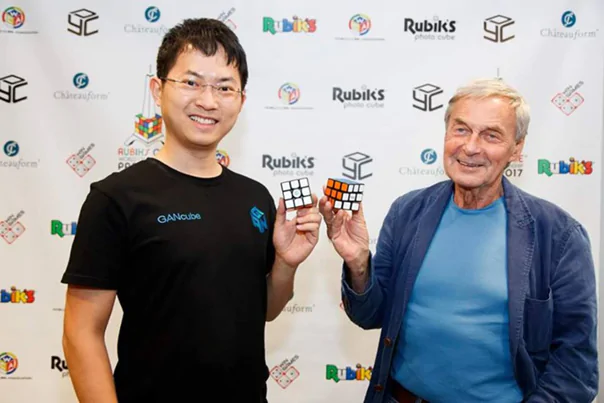
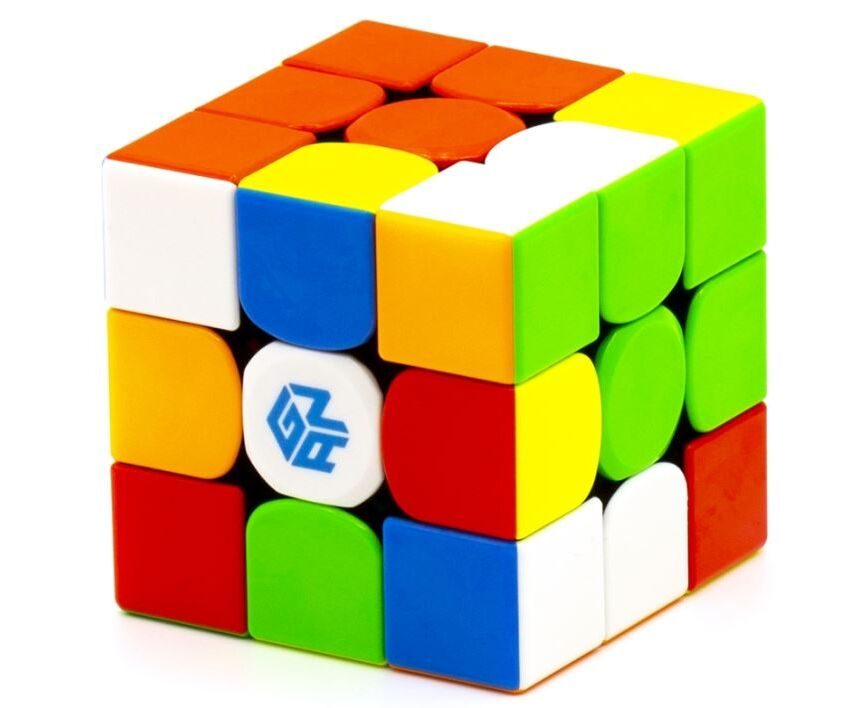

History of Gans Puzzles
Gans Puzzles was founded in 2011 by China's
first national record holder Gan-Yuan Jiang. In 2014, the
company was officially registered with the new name GanCubes.

The company regularly releases cubes,
embedding new amazing technologies into puzzles. The
manufacturer owns more than fifty patents, clearly showing
the originality of the technologies used.
Gans Puzzles engineers pioneered an innovative
magnet positioning system, introduced the replacement of
magnets using capsules, created a new system for adjusting
the cross by replacing nuts, and other technologies. Sometimes
GanCubes are even compared to Apple Inc, only in the world of
speedcubing.
Cubes 3x3x3
From 2011 to 2014, the company produced
cubes that at that moment could not compete with DaYan
puzzles. The first three Ganspuzzle cubes, as well as the
Gans 357 with a face size of 57 millimeters, did not impress
speedcubers as much as models from other companies. The
structure of Ganspuzzle I, II and III had unstable torsion,
and the elements constantly touched each other.
At the beginning of 2015, the manufacturer
finalized their puzzles and released various variations of
the Gans 356. The cubes had an impressive angle cut, and
since then many cubers began to look at the Gans cubes.
But since 2016, the manufacturer began to
regularly surprise puzzle lovers and seriously intrigued
speedcubers with its technologies.
Until today, the company has been using new
technologies and each cube differs from the previous one in
individual chips.
